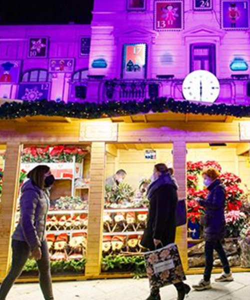
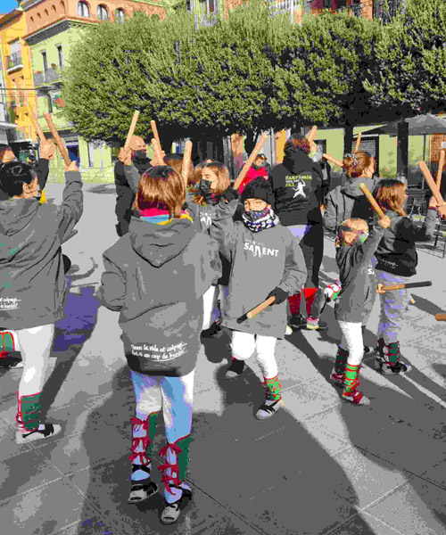
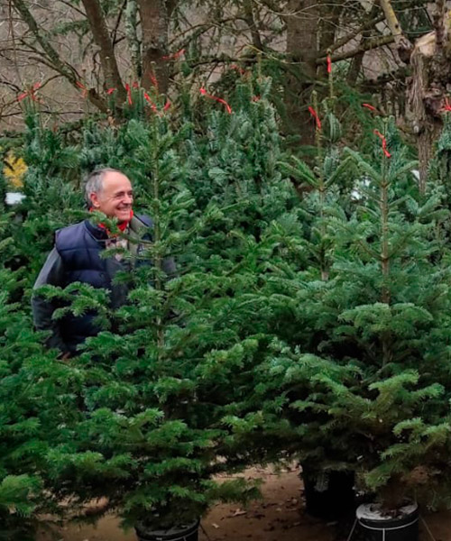
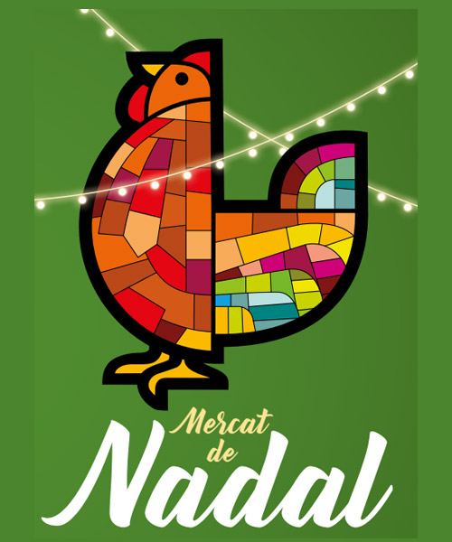
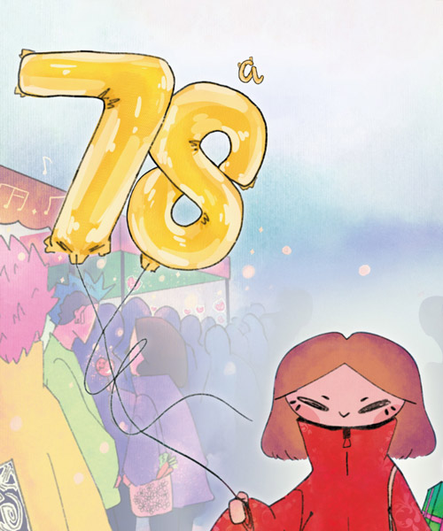
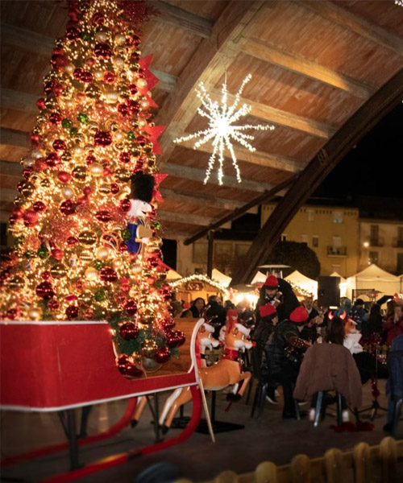

Fires
Des de parades d'artesania i decoració fins a avets i guarniments típics d'aquestes dates, les fires i mercats de Nadal són el lloc ideal per trobar regals únics, gaudir de les delícies nadalenques i submergir-se en un ambient festiu i màgic

Assaborir el Nadal

Fira de Nadal tradicional on es poden trobar figures i elements per als pessebres, avets, rams de la sort, així com una àmplia varietat d’articles d’artesania. També ofereix ornaments florals i decoracions per embellir les llars durant les festes.

La Fira de Santa Llúcia torna a la rambla de Nostra Senyora, convertint-se en el punt de referència per preparar les festes de Nadal. Les parades ofereixen una gran varietat d’articles nadalencs: figures per al pessebre, ornaments florals, decoracions i molts altres elements per guarnir les llars.

Durant uns dies, el poble es transforma en un escenari ple de màgia nadalenca. Al Passeig 1 d'Octubre (parc Pere Sallés), trobaràs un mercat d'artesania amb música en viu. A més de les parades, hi ha activitats per a totes les edats: dinar popular, jocs infantils, concerts, balls tradicionals i gegants.

La Fira de l’Avet d’Espinelves és una de les més singulars de Catalunya. Situada en un poble amb carrers i cases antigues que recorden un pessebre, l’ambient és acollidor i ple de l’aroma de llenya cremada. S'hi poden comprar arbres de Nadal autòctons, com el Masjoanis i el Picea Excelsa, cultivats a la zona.

Descobreix l’ambient nadalenc al mercat de Nadal de Caldes de Montbui, amb casetes de fusta que ofereixen alimentació, artesania, antiguitats i brocanteria. Gaudeix de la cuina sobre rodes i activitats infantils, però el protagonista és el brou termal, elaborat a l’olla més gran de Catalunya amb aigua de la Font del Lleó.

A Sant Celoni, per Nadal, els carrers del centre s'omplen amb més de 100 parades de productes nadalencs. L'esdeveniment ofereix una àmplia oferta comercial i un programa d’activitats per a totes les edats, com tallers de pessebres, maquillatge, passejades amb poni i carruatge, i molt més.

Viu la màgia de Nadal a la Fira de Mercantic! Un mercat d’artesania i gastronomia on trobaràs regals únics envoltats d’antiguitats, llibres i restaurants encantadors. Descobreix estands exclusius amb disseny i artesania de qualitat, gaudeix de música en directe i participa en tallers creatius.

Combina tradició i modernitat amb oficis antics, tecnologia i decoracions nadalenques. No et perdis la zona fresca, on trobaràs embotits i productes de l’horta del Llobregat, tot en un esdeveniment imprescindible per al municipi.

El mercat de Nadal torna al Cobert de la Màquina de Batre amb comerç local, artesania, gastronomia i música. La plaça 11 de Setembre recrearà l’encant dels mercats centreeuropeus amb parades de fusta, llums, un gran arbre de Nadal i una pista de gel per gaudir en família.

La Fira de Nadal de Sant Vicenç de Castellet transforma els carrers centrals en un espai ple de vida i tradició nadalenca. Amb una àmplia oferta de parades que inclouen alimentació, decoració, i artesania, la fira també compta amb activitats i tallers infantils per a tota la família.